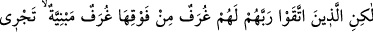
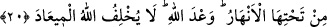
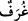
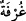
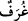

bir tek cümledir.
Herkesi veya kendisine “vaîd” kelimesinin vacip olduğu kimseyi, ya da cehennemde
olan kimseyi acaba ey Muhammed kurtarabilir misin? Yâni onu mü’min yapabilir misin
ve azaptan kurtarabilir misin? Yâni Ebû Leheb, oğlu Utbe ve benzeri cehennemlikleri
kurtarmak senin elinde değildir.
Burada işâret vardır ki ilk taksimat sırasında ebedî olarak Allah’ın kahr sıfatlarına
mazhar olacağı kesinleşmiş olanlara, hiçbir şefâatçinin şefâati fayda vermez. Nebî ve
rasullerin tamamı onu Allah’ın gazabı, kovması ve uzaklaştırması cehenneminden
çıkaramaz. Çünkü “Hani siz bir ateş çukurunun tam kenarında bulunuyordunuz da
Allah sizi oradan kurtarmıştı.” (Âl-i İmrân, 3/103) âyetinin delâlet ettiği üzere şefâat
ancak mü’minler içindir.
“Ateşte olanı” ifâdesi ile kasdedilenler, haklarında “Onların üstlerinde ateşten
tabakalar, altlarında da (öyle) tabakalar var.” (16. âyet) buyrulan kimseler olduğu için
onların peşlerinden şöyle buyurdu:
20. Fakat Rablerinden sakınanlara, üstüste yapılmış, altlarından ırmaklar akan
köşkler vardır. Bu, Allah’ın verdiği sözdür. Allah, verdiği sözden caymaz.
“Fakat Rablerinden sakınanlara,” Fakat Rablerinin azâbından korkan, îman ve tâatle
muttasıf olanlara…
et-Te’vîlâtü’n-Necmiyye’de der ki: “Fakat Rablerinden sakınanlara,” yâni bugün
şirk koşmaktan, günahlardan, hatâlardan, şehvetlerden, hevâya kulluktan, Mevlâ’dan
başkasına az da olsa meyletmekten sakınanları, Allah ilk taksimat sırasında haklarında
azab kelimesinin/hükmünün sâbit olmasından kurtarmış ve ebediyete kadar onların lütuf
sıfatlarının mazharı olmaları hükmünü vermiştir.”
Takvâdaki makamlarına göre, cennette “üstüste yapılmış,” yâni bazısı bazısının
üstünde yüksek, “altlarından ırmaklar akan köşkler vardır.” Yüksek ve alçak arasında
fark olmaksızın bu yüksek ve alçak köşklerin altından da dört ırmak akar.
Allah, kâfirler için olan cehennemdeki derin çukura/derekelere mukabil, onlar için
naîm cennetlerinde yüksek dereceler olduğunu beyân buyurdu.
“
” kelimesi, yüksek bina demek olan “
”nin çoğuludur. el-Müfredât’ta da
belirtildiği üzere cennetin evleri “
” diye isimlendirilmiştir. Özellikleri anlatılan bu
köşkler, sağlamlık ve muhkemlik bakımından yere yapılmış binalara benzer.
Müftî Sa’dî şöyle der: “Görünen o ki bu tavsîfin faydası, hakîkati ortaya koymak ve
bu cennet köşklerinin cehennemdeki “ateşten tabakalar” (16. âyet) gibi olmadığını